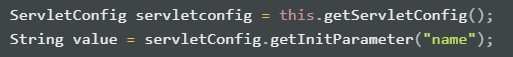

Servlet and JSP
Jakarta Server Pages (JSP) is a collection of technologies that helps
software developers create dynamically generated web pages based on HTML,
XML, SOAP, or other document types.
**Servlets** are the Java programs that runs on the Java-enabled web
server or application server. They are used to handle the request obtained
from the web server, process the request, produce the response, then send
response back to the web server.
To better understand servlet, we need to know what is HTTP.
**HyperText Transfer Protocol (HTTP)**
is a communication between the client and the server.
An example would be, when we click on a link, the browser will send a request
to the server and the server will responds with a corresponding request.
When Tomcat server received a http request from client, it will create a request
object and response object.
What is in the request you might ask!
A HTTP request consists of
- Request line
- Headers
- Empty line
- Message-body (optional)
Request line
Request-Line = Method Request-URI HTTP-Version
HTTP Request Method
In the request, A HTTP Request Method must be specified.
There are several request methods such as HEAD, OPTIONS,
DELETE, TRACE, PUT and the most common GET/ POST.
GET/ POST
For easier understanding, just think of GET and POST as a process of getting something from the server and sending somthing to the server.
Headers
The request-header fields allow the client to pass additional information about the request, and about the client itself, to the server.
Servlet Life Cycle

- Servlet is first initialized by calling the init() method.
- After being initlialized, all the client's request will all be handled by calling the service() method.
- Servlet is terminated by calling the destroy() method. An example of this will be terminating the Tomcat server or terminating any unused servlet.
- init() method will be called to initialize a terminated servlet.
In this article, instead of implementing Servlet and use the 3 methods mentioned, we will just extends the class of HttpServlet which will come with 2 methods, doGet() and doPost();
Now, let's say we have a servlet called MyServlet and a html page called index.html
What we are trying to do here is call MyServlet when the submit button is pressed.
But, how does it knows which servlet to call?
The answer lies in the web.xml file. ;)
The web.xml file can be found under the WEB-INF folder and inside the xml file, we can decide which servlet to call when certain action happened.
The above code simple links the url-pattern of printHi to the servlet MyServlet.
So the orders go like this:
User clicks on the submit button → certain action will be performed based on the url set → this url will be used to check in the xml file if there is any linked servlet → If there is a linked servlet, the servlet will be called.
Can the servlets store value?🤨
Yes it can, with the help of **ServletConfig** and **ServletContext.**Starting to feel dizzy?🥴
No worries, let's explore.
ServletConfig
We can store some parameter inside the xml file.Wait what? Why do we have to do so?
Let's imagine we have a servlet inside the xml file.
Woule it be nice if we can store some values in it and just retrieve it to be used in our servlet?
By doing so, we can modify the values directly in this xml file 😉.
Now this servlet will store the my name inside the xml file and can be used anywhere in the servlet.
To use it in servlet, simple type 
This will store the ServletConfig as an object and the name will be stored inside the value variable.